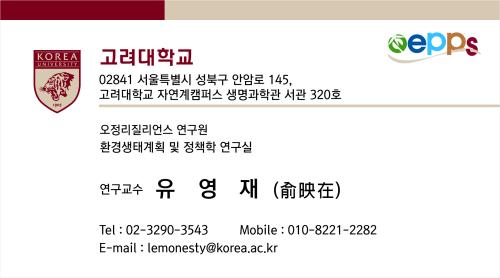

Climate Change
Adaptation
기후변화 영향, 취약성 및 적응능력을 분석하고 지역 특성에 기반한 적응정책과 실행 전략을 연구합니다.
CLIMATE CHANGE ADAPTATION · ECOLOGICAL CONSERVATION · PLANNING AND POLICY
기후위기에 따른 적응, 재난·재해 대응, 생태계 보전 등과 관련된 계획 및 정책을 연구합니다.
과학적 근거를 지역의 정책과 계획으로 연결해 더 회복력 있는 미래를 만드는 연구를 지향합니다.

CURRENT POSITION
PROFESSIONAL EXPERIENCE
Korea Research Institute on Climate Change
OJEong Resilience Institute, Korea University
Environmental GIS/RS Center, Korea University
EDUCATION
이학박사 · 환경계획및조경학
Ph.D. in Environmental Planning and Landscape Architecture
Department of Environmental Science and Ecological Engineering, Korea University
RESEARCH PROFILE
환경정책과 공간계획을 기반으로 기후변화가 지역사회와 자연환경에 미치는 영향을 분석하고, 이를 실질적인 정책 수단과 적응 전략으로 연결하는 연구를 수행하고 있습니다.
주요 관심 분야는 기후위기 적응, 재난·재해 위험평가, GIS 및 위성영상 기반 환경변화 분석, 자연자본과 생태계서비스, 지역단위 환경정책입니다.
기후·환경 문제를 공간적으로 진단하고, 지역의 정책 의사결정에 활용할 수 있는 분석 체계로 발전시키는 데 관심이 있습니다.
기후변화 영향, 취약성 및 적응능력을 분석하고 지역 특성에 기반한 적응정책과 실행 전략을 연구합니다.
폭염, 홍수, 산사태 등 기후재난의 위해성·노출성·취약성을 분석하고 위험의 공간적 불균형을 평가합니다.
자연자본, 생물다양성, 생태계서비스 평가와 관련 인증·검증 체계 및 정책 활용방안을 연구합니다.
GIS, 위성영상, NDVI 및 토지피복 자료를 활용하여 환경변화와 보호·완충지역의 효과를 분석합니다.
HONORS & AWARDS

GET IN TOUCH